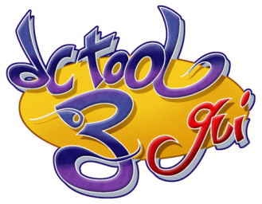

This's DC-TOOL GUI 3 !
2002-2005 ©reated by [big_fury]SiZiOUS
Welcome in the DC-TOOL GUI 3 Help File !
DC-TOOL GUI 3 is a cool Windows program to test and debugs your applications on your Dreamcast.
Connect your Dreamcast to your PC with that and enjoy !
Please select a chapter in the left treeview.
[big_fury]SiZiOUS
Help v3.0